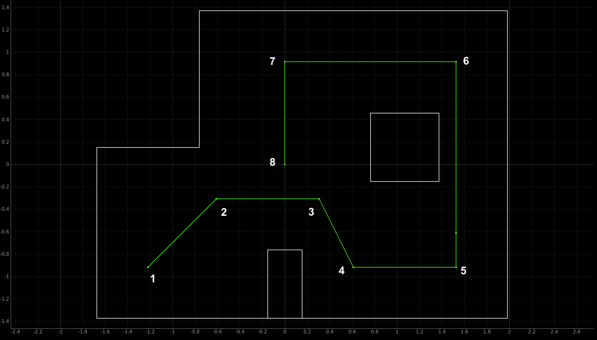
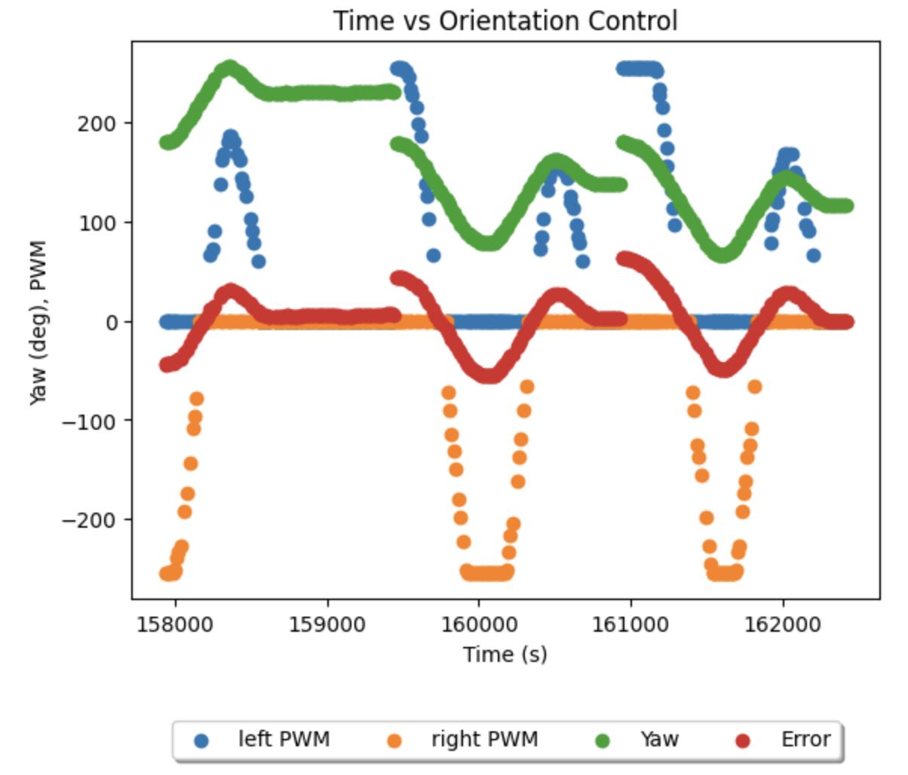

Lab 12
Objective
In this lab, I worked alone to put together a method for navigating a set of waypoints in the lab arena as quickly as possible. I experimented with variations of closed loop control in particular, before settling on one overarching method that prioritised speed over accuracy.
Overarching Philosophy
Inspecting the lab 12s of my peers and previous years, I determined that while many labs are successful at reaching all the waypoints, they struggle to do so quickly. The source of the slowdown was common. Each robot would first come to a complete stop before beginning to spot turn towards the next waypoint. It would then remain in place until the spot turn had completed before beginning to move forward. I sought to eliminate this two-fold slowdown by beginning to move towards the next waypoint before reaching the upcoming waypoint, and maintaining momentum while undergoing the turn. This reflects something closer to how cars take turns in the real world, and reduce battery consumption from repeated starts/stops. The tradeoff, however, is that I chose to sacrifice hitting the center of each waypoint consistently. For this lab I gave myself the goal of having all four sets of wheels enter the tile containing each waypoint.
Approach Techniques
There were three ways I could accomplish my goals this lab, presented here in increasing execution speed.
Approach 1
The first would be to rely on localization at each waypoint to generate the path to the next, and to ensure each waypoint was hit. While my localization from lab 11 was sufficiently accurate to support this approach, it would not execute quickly enough to succeed in my objective of minimizing total runtime. Having to do a spot turn would also upend the rationale for my philosophy, as we would neither maintain momentum betwen waypoints, or reflect how cars move in the real world.
Approach 2
The second method would be conducting closed loop control on forward-facing distance and heading to hit each waypoint. This is likely the golden mean between execution speed, as it forgoes costly localization, and accuracy, as theoretically we could hard-code the target headings and forward-distances for each waypoint. However, I chose to avoid this approach too. Looking back on my lab 9, I found that the effective range for my forward-facing TOF is around 1.5-2 meters. Looking at the waypoints, approaching the second, third, fifth, sixth, and seventh waypoints would all report arbitrary distances for the first part of the leg. Overcoming this would require hardcoding some blind running time at the start of each of these legs. I also noticed the overshoot of many robots using this approach without well-tuned PID. Having to experiment with both the blind running times and the PID values, as well as hardcoding so many elements, would likely be a large time drain, and arguably not very unique in the resultant drive path.

Approach 3
Thus, I opted for the third approach - the fastest, but also most prone to error. In this, I set a base PWM to maintain throughout the run. Experimentally, I account for this base PWM in open loop control that determines how long the robot will drive straight towards the next waypoint before setting a new target heading to make the waypoint after. To turn, I will add a value to the PWM of one side of the vehicle, and remove it from the PWM of the other. This value will be determined by proportional control on the heading of the robot, active throughout the run. The end result, in theory, would be a robot that maintains constant motion though the whole run, and drives in a manner that resembles a slalom, or a car on a curvy road. An additional benefit this method lends is that if at any point the heading of the robot dislaigns with what is expected to reach the next waypoint, adustments will be made on the fly - much like a car staying in a lane. While I recognized in advance that only perfectly tuned heading control, and getting heading readings with minimum drift, would be required to prevent horrific overshoot on turns (turning smooth car-like turns into spinouts) I chose to give it a shot.
Below are documented code snippets at the core of the operation. The first determines if the robot is 'on track' or not - checking if its current heading error is less than the prescribed 15 degrees. When the robot is newly and steadily on track, as it would be following stabalising on a new heading, a variable called forwardTime captures the time since it reached this state (this will particuarly be noted later in the lab). Regardless of being on track or not, the error is constantly being updated against the target heading, and the corresponding rotation speed needed to bring it back onto a perfect heading is updated. The heading was updated by collecting the most recently available IMU angular speed, integrating it over the timestep since the most recent, and adding to the previous heading.
When the robot is off track - as it would be immediately after reaching a waypoint when the next heading is assigned as the setpoint, or if the robot leaves the acceptable 15 degree diversion, the following snippet shows how the left and right PWM changes.
To use these functions, we need to set target headings, and forward drive durations for each stretch of the drive path. Expanded out of its abstracted function form for clarity, the following is that function. The current yaw was set to 180.0 after reaching each waypoint to avoid wraparound issues with heading, and as due to drift heading errors would otherwise accumulate over time. The target angles, in reference to the 180.0, were computed by calculating the angles connecting each waypoint to the next. The 'magic numbers' that required the most trial and error work here were the forwardTime values allowing enough straight line drive between waypoints.
Experimenting Outside the Arena
Before attemtpting in the arena, I wanted to verify I was able to turn accurately while maintaining forward motion, and prevent unstable states reaching target headings. Scaling the arena to 1/2 size, I set values for forwardTime and the angles between turns accordingly. I then ran the waypoints 1-5 repeatedly, adjusting the values, until I got behavior that matched what I hoped to see in the arena. Below are two runs that can be visually verified as accurate to the scaled arena.
Experimenting in the Arena
Having found success with navigating the course replicated and scaled outside the arena, I began making adjustments with the arena's dimensions. unfortunately, under end-of-semester time crunch, I couldn't manage to make it through all the waypoints in a single run. Below are three videos (in order of their occurance) that each showcase characteristics of the method, and are contenders for being my 'best run' because of it. Analyzing each, I identify a different strength of my method, the weakness of my method that caused the failure, and improvements I would make should I have had more time.
Notable Attempt 1
This first video showcases the robot's ability to adjust when it perceived it is off course. After clearing waypoint 2 (the waypoint after the starting) we see it dramatically overshoot in heading correction to face the smaller box rather than waypoint 3. While maintaining its forward motion, it then corrects this, to match the heading necessary to get to waypoint 3 from 2. However, it is the constant motion of the robot that means it is now out of line to get to 3 from 2. I believe this failure mode, of a misalignment in heading due to inaccurate starting position, can be remedied by a combination of improving the controller, or reducing the base speed of the robot. In both cases, the initial angle overshoot would be reduced, and thus the resulting position offset upon correction would be less significant. A more permanent fix would be incorporating dead reckoning - knowledge of change in position as a function of actuation inputs alone. To do this would require stiff characterization of the translation of motor inputs to outputs, and consistency in these outputs across all points in the arena. If I had more time, this is likely the solution I would have implemented to improve this method.
Notable Attempt 2
This second video, and improvement on the controller from the first, showcases the ability of the robot to recover from getting stuck thanks to the forwardTime stop and start feature. Although not in the code snippets above due to bugs, I believe this is important to the method should it be re-explored, as it helped overcome the exact issue of getting stuck. The concept of the stop and start is to stop the forwardTime timer when the robot is outside of its target error bound (15 degreees). As it continue to attempt to reorient, the degree to which the drive is counted towards the forwardTime timer is discounted by the degree of error. The higher the error, the less the motion of the robot will be in the forward directon, and thus less of that time can be considered forward motion. As a result, while the robot lost time getting stuck on the box here, it accounted for this time as it reoriented for waypoint 5. While it overshot slightly, it correctly determined that it is at the fifth waypoint, rather than assuming it was further along the path. As a result, we see it reorient towards waypoint 6 perfectly. The overshoot in getting to waypoint 3 was a simple fix of adjusting the open loop forwardTime time required between waypoints 2 and 3. The error in getting to waypoint 6 was a simple error on my part of assigning the correct heading for the next rotation.
Notable Attempt 3
This third video, getting to the furthest position I achieved in the arena, showcases the robots ability to make accurate turns in motion up to 45 degrees. Having tuned from the controller from the second run, I found I could make these turns without much positional offset (caused by having to compensate for overshoot). Yet, we see there is much overshoot caused by turns of greater than 45 degrees, exacerbated by running close to steady state (max) speed. I would improve this by adding I and D terms to my controller, and perhaps a 'smart corning' function. This function would, rather than changing the target heading suddenly, instead incrementally change the target heading towards the next waypoint as the current waypoint is appraoched. This would flatten out the change in error, and present it more as a smooth curve rather than a discontinuity - thereby reducing the immediate rotational speed burst that causes heading overshoot. Below is a collected data plot demonstrating this error discontunity. Implementing smart cornering was my original idea for the lab, but couldn't be executed within the time constraints.

Wrapping Up...
While none of my attempts in the arena satisfied my goal of hitting each waypoint within its tile, and clearing the whole path, I consider this lab a partial success. Putting together aspects of closed loop control, and coming up with a novel method that prioritised speed over accuracy was challenging and engaging. With time, as explained in the videos above, there are relatively simple extensions to this method that would doubtless have it clear the whole course, and have it do so faster than my peers'. I would also have liked to incorporate a localization element to my lab, and believe an answer to reconciling the slowdown it introduces is to create a low-resolution lidar outfit by adding multiple TOFs in set positions around the car. Implementing this together with the smart cornering discussed after the third video would, I believe, be a fantastic (albeit expensive) solution.
Massive thank you to Professor Petersen and all the TAs of this class for making lectures and labs so informative and enjoyable! I had great fun throughout and particuarly loved how the course combined rigorous theory with the reality of practical application. Highly recommend!